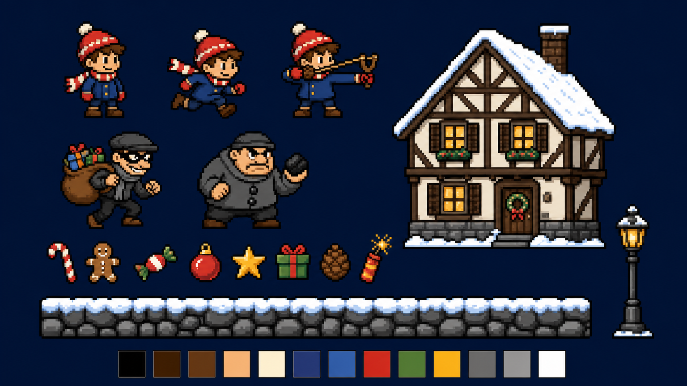
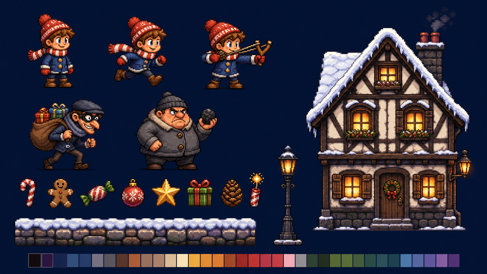
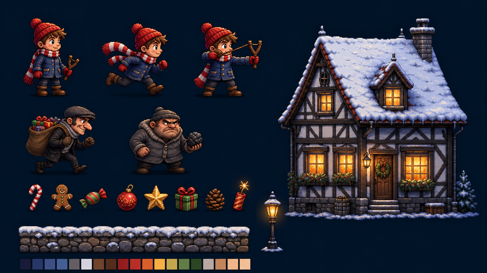
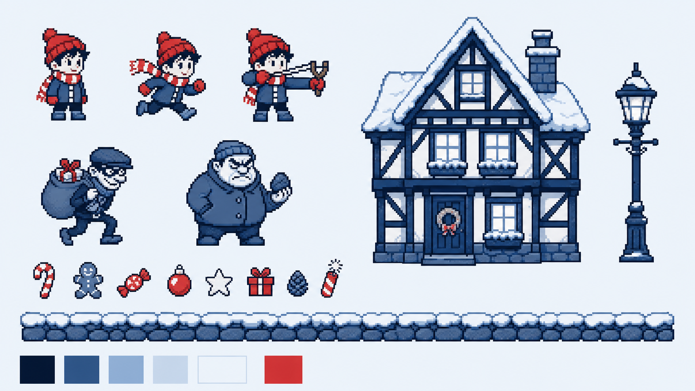
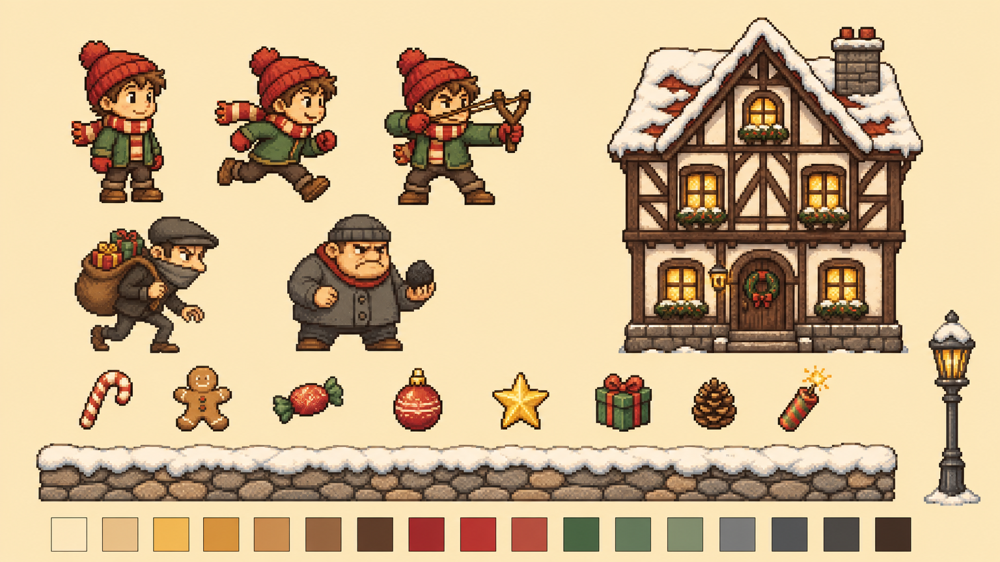

Ялинка до світанку — арт-стилі
На всіх листах той самий зміст: герой (стоїть, біжить, цілиться), два злодії, фахверковий будинок,
предмети, бруківка й ліхтар, палітра. Відрізняється лише стиль. Клік по картинці відкриває її в повному розмірі.

A8-біт
- Найчіткіше читається, найменше роботи: мало кольорів і мало кадрів анімації
- Найлегше привести до чесної піксельної сітки
- Найменше атмосфери, виглядає «як ще одна ретро-гра»

B16-біт затишний
- Найгарніший будиночок: бурульки, дим, вазони, теплі вікна
- Виразні персонажі, багата тепла палітра
- Багато кольорів, тому важче тримати всі асети однаковими

CСучасний «hi-bit»
- Найбільше атмосфери: нічна синява, плями світла з вікон і від ліхтаря
- Світло, сніг і сяйво в грі робить код, тож вогні справді мерехтітимуть і гаснутимуть (гасильники!)
- Найбільше деталей, тому довше генерувати й чистити

D4 сині + червоний
- Найоригінальніший і найвпізнаваніший
- Ігрова ідея: червоне = «те, що треба врятувати». Предмети одразу видно
- За 20 хвилин гри може набриднути; важко передати ніч і теплі вогні

EВінтажна листівка
- Найтепліший і найказковіший, кремова «паперова» гама
- Герой у зеленому, тож червоний лишається для свята
- Сутінки, а не ніч: менше «магії вогників»